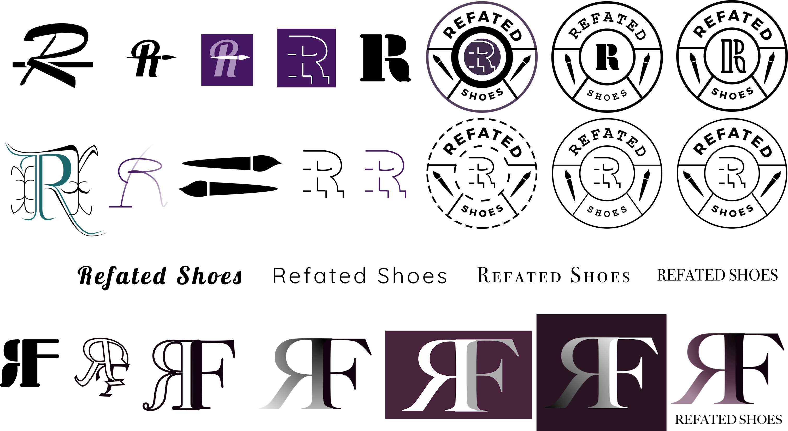
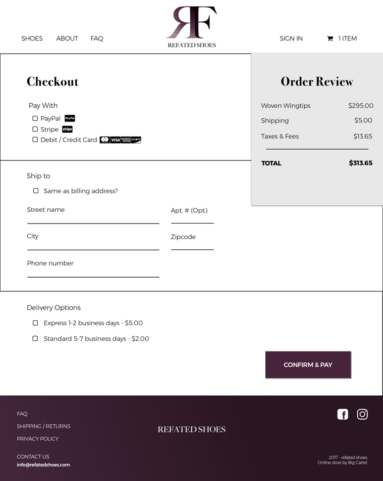

classics reimagined
The entrepreneur (Darcy) behind ReFated Shoes, or RF, is an artist with impeccable style. Bored of the basic blacks and browns, he hand-painted his own shoes in vibrant hues, patina patterns, and however else inspiration took hold of his paint brush. To his surprise, colleagues and passersby were offering to buy the shoes off his feet. So, he decided to take his hobby online.
After a successful stint on Etsy, the entrepreneur decided that it was time to host his own site and define his brand. Enter: me. My role was to help him with strategy, marketing, and design.
starting from the sole up
Since we were going from an Etsy site to a stand-alone e-commerce site, we needed a better understanding of the environment: who else was doing this? How will we convince strangers to buy these shoes? Where should we market the new site? And most importantly, how do we set ourselves up to compete?
Who's Out There?
During the stakeholder interview, Darcy identified a few other companies with a similar business model:


Design pattern: the direct competitors use stone/slate textures and colors, while the sources of inspiration rely on a black and white color scheme with brightly colored calls-to-action.
But first, what do the people want?
Considering the distinct nature of this business - painting second-hand, vintage, or out-of-season shoes - we had to figure out how to properly market the product. We also needed to identify the target customer. The first survey, with 33 respondents, reconfirmed what we knew:
- 87.9% mostly consider quality & style to purchase shoes
- 75.8% would purchase shoes online
- 48% would buy or consider buying refurbished shoes
And gave us our target customer: out of the 87.5% of respondents who would pay between $100-$300 for a pair of shoes AND would purchase shoes online, 50% of them would consider buying refurbished shoes.
The second survey, with 133 respondents, and third survey gave insight into word choice:
- 54.3% would consider buying hand-dyed shoes
- 25.4% would buy hand-dyed shoes
- "used" most resembled "refurbished"
I conducted another survey to test whether it was the term “refurbished” or the concept behind RF that turned customers away. The word refurbished had to change, so we decided on hand-painted. This term tested well during the website prototype.
Challenges
The word "refurbished"
Ambiguity behind the refurbishing process
Solutions
Replace "refurbished" with "hand-painted"
Show before / after pictures
Explain the process
Who Are They?


information architecture
Mapping
We conducted a card sort to help organize the website and discover whether additional pages were needed. We learned that the potential customer wanted to learn more about the product, with multiple survey respondents suggesting a section devoted to hand-painting techniques.

Flows
Based on our user personas, we decided to target the Vincent’s and Marcus' through Instagram and Facebook, while the Jean's would learn through word-of-mouth. Accordingly, I designed the below user flow to reflect the journey the shopper will take once they click on that link.
translating to web
Sketching to Lo-Fi

branding
Logo Formation
Logo Details
Colors


Typography

Buttons

Mockup

prototype
User Feedback
"Nice layout, clean crisp lines. [I] like the color scheme."
“Love the concept. Everyone loves to have originality in their style.”
We conducted multiple rounds of guerilla testing and online user testing through Invision. Overall, we received positive feedback on the shoes and the website. Survey respondents were intrigued by the concept and the entrepreneur, while others were keen to order shoes from the prototype. Negative comments were mostly directed towards the concept, rather than the design. This was alleviated by providing additional information on the dyeing process and on the specific shoes that are being sold.
Landing Page

About, Contact, FAQ


Purchasing Flow


- 

Membership
Darcy’s goal is to include membership services once he builds a larger following. So, we planned for the future and designed an account page.

what i learned from this experience
In retail, photography is just as important as the site design. To dispel concerns of condition and quality, the users requested more photos of the finished product as well as the painting process.
We discovered that customers want to learn about products prior to purchasing them. In the future, we will explore embedding videos on the website and social media platforms.